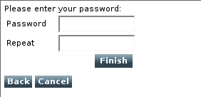

The Forms Wizard widget is used to simplify the process of completing the forms that have multiple fields, while allowing each step of the form to be validated using Forms Validator widgets. Wizards are particularly well-suited to mobile devices, as each page can contain only a small number of fields and buttons.

<xf:model>
<xf:instance>
<xf:instance>
<si:instance>
<si:item name="login"/>
<si:item name="password"/>
<si:item name="repeat"/>
</si:instance>
</xf:instance>
</xf:instance>
<xf:submission id="myForm" action="receive-form.jsp" method="post"/>
</xf:model>
<style type="text/css" media="handheld,all">
widget|popup#myPopup {
width: 50%;
left: 25%;
top: 10%;
border: 1px solid #e5eaed;
overflow: hidden;
text-align: center;
padding: 0px;
}
widget|popup#myPopup > #confirmTitle {
width: 100%;
text-align: left;
white-space: nowrap;
background-color: #23516a;
padding: 2px 1px 2px 1px
}
widget|popup#myPopup > #confirmMessage {
text-align: center;
padding: 10px;
color: #000;
}
</style>The widget:wizard element defines the widget. The cancel-dialog attribute identifies a popup, which will be shown to confirm the 'cancel' action. Each step of the wizard is enclosed by the xf:group element. MCS automatically adds buttons which switch the wizard to the next or previous step.
<widget:wizard class="widget" id="myWizard" cancel-dialog="myPopup">
<xf:group>
<div>Please enter your login:</div>
<xf:input ref="login">
<xf:label>Login</xf:label>
</xf:input>
</xf:group>
<xf:group>
<div>Please enter your password:</div>
<xf:input ref="password">
<xf:label>Password</xf:label>
</xf:input>
<xf:input ref="repeat">
<xf:label>Repeat</xf:label>
</xf:input>
...
</xf:group>
</widget:wizard>
<xf:submit submission="myForm" id="submit-button"> <xf:label>Finish</xf:label> </xf:submit>
<widget:button id="start-button" action="myWizard#launch"> Start the wizard </widget:button>
<widget:popup id="myPopup">
<div id="confirmTitle">Confirm cancellation</div>
<div id="confirmMessage"> Do you really want to cancel?
All the data you entered will be lost.</div>
<div class="buttons">
<widget:dismiss type="yes">yes</widget:dismiss>
<widget:dismiss type="no">no</widget:dismiss>
</div>
</widget:popup>Here is the complete code for the wizard.xdime file
<?xml version="1.0" encoding="UTF-8"?>
<html
xmlns="http://www.w3.org/2002/06/xhtml2"
xmlns:xf="http://www.w3.org/2002/xforms"
xmlns:si="http://www.volantis.com/xmlns/2006/01/xdime2/si"
xmlns:mcs="http://www.volantis.com/xmlns/2006/01/xdime/mcs"
xmlns:widget="http://www.volantis.com/xmlns/2006/05/widget"
xmlns:template="http://www.volantis.com/xmlns/marlin-template"
xmlns:urid="http://www.volantis.com/xmlns/marlin-uri-driver">
<head>
<title>Wizard w/custom dialog</title>
<link rel="mcs:theme" href="/themes/main.mthm"/>
<link rel="mcs:theme" href="/themes/wizard.mthm"/>
<link rel="mcs:layout" href="/layouts/main.mlyt"/>
<xf:model>
<xf:instance>
<si:instance>
<si:item name="login"/>
<si:item name="password"/>
<si:item name="repeat"/>
</si:instance>
</xf:instance>
<xf:submission id="myForm" action="receive-form.jsp" method="post"/>
</xf:model>
<style type="text/css" media="handheld,all">
widget|popup#myPopup {
width: 50%;
left: 25%;
top: 10%;
border: 1px solid #e5eaed;
overflow: hidden;
text-align: center;
padding: 0px;
}
widget|popup#myPopup > #confirmTitle {
width: 100%;
text-align: left;
white-space: nowrap;
background-color: #23516a;
padding: 2px 1px 2px 1px
}
widget|popup#myPopup > #confirmMessage {
text-align: center;
padding: 10px;
color: #000;
}
</style>
</head>
<body>
<template:apply href="templates/demo-main.xdtpl">
<template:binding name="title" value="Wizard w/custom dialog"/>
<template:binding name="content">
<template:complexValue>
<widget:wizard class="widget" id="myWizard" cancel-dialog="myPopup">
<xf:group>
<div>Please enter your login:</div>
<xf:input ref="login">
<xf:label>Login</xf:label>
</xf:input>
<div class="buttons" style="clear: left;"/>
</xf:group>
<xf:group>
<div>Please enter your password:</div>
<!-- Use styles and layouts to lay these out rather than tables. -->
<xf:input ref="password">
<xf:label>Password</xf:label>
</xf:input>
<xf:input ref="repeat">
<xf:label>Repeat</xf:label>
</xf:input>
<xf:submit submission="myForm" id="submit-button">
<xf:label>Finish</xf:label>
</xf:submit>
<div class="buttons" style="clear: left;"/>
</xf:group>
</widget:wizard>
<widget:button id="start-button" action="myWizard#launch">
Start the wizard
</widget:button>
<widget:popup id="myPopup">
<div id="confirmTitle">Confirm cancellation</div>
<div id="confirmMessage"> Do you really want to cancel?
All the data you entered will be lost. </div>
<div class="buttons">
<widget:dismiss type="yes">yes</widget:dismiss>
<widget:dismiss type="no">no</widget:dismiss>
</div>
</widget:popup>
</template:complexValue>
</template:binding>
</template:apply>
</body>
</html>As an exercise, create a receive-form.jsp file in the client-app directory.
The page processes the submitted form, and returns the entered values in a form of a table.
<?xml version="1.0" encoding="UTF-8"?>
<%@ page
contentType="x-application/vnd.xdime+xml"
import="java.util.*" %>
<%@ page import="com.volantis.mcs.servlet.*"%>
<html
xmlns="http://www.w3.org/2002/06/xhtml2"
xmlns:mcs="http://www.volantis.com/xmlns/2006/01/xdime/mcs"
xmlns:template="http://www.volantis.com/xmlns/marlin-template"
xmlns:widget="http://www.volantis.com/xmlns/2006/05/widget">
<head>
<title>Received form</title>
<link rel="mcs:theme" href="/themes/main.mthm"/>
<link rel="mcs:layout" href="/layouts/main.mlyt"/>
<style type="text/css">
table {
border-collapse: collapse;
margin: 0.25em;
}
td, th {
border: 1px solid black;
padding: 0.25em;
}
</style>
</head>
<body>
<template:apply href="templates/demo-main.xdtpl">
<template:binding name="title" value="Received form"/>
<template:binding name="content">
<template:complexValue>
<%
Map params = null;
if (MarinerServletRequestContext.findInstance(request) != null) {
params = MarinerServletRequestContext.findInstance(request).getParameterMap();
} else {
params = request.getParameterMap();
}
if (!params.isEmpty()) {
%>
<div class="widget">
<table>
<tr>
<th>Name</th>
<th>Value</th>
</tr>
<%
Iterator i = params.keySet().iterator();
while(i.hasNext()) {
String paramName = (String)i.next();
String[] values = (String[])params.get(paramName);
StringBuffer buffer = new StringBuffer();
for (int j = 0; j < values.length; j++) {
if (j > 0) {
buffer.append(", ");
}
buffer.append(values[j]);
}
String value = buffer.toString();
%>
<tr>
<td><%=paramName%></td>
<td><%=value%></td>
</tr>
<%
}
%>
</table>
</div>
<%
} else {
%>
Empty form received
<%
}
%>
</template:complexValue>
</template:binding>
</template:apply>
</body>
</html>| Name | Purpose |
|---|---|
| div | A section used to add extra structure to documents. Style sheets can be used to control the presentation. |
| si:instance | Container for data items used to supply initial values for forms controls, or to provide additional data to be submitted with the form. |
| si:item | Defines an item of instance data that is required if a form control needs to be initialized, or when data not associated with a form control needs to be provided during form submission. |
| table | Defines a table. |
| td | A cell in a table containing data. |
| tr | Denotes a row within a table. |
| widget:button | A general purpose element, used by widgets which need a button-like control. |
| widget:dismiss | Provides a method for dismissing a widget. |
| widget:popup | The main element for a Popup widget. |
| widget:wizard | Defines a Forms Wizard widget containing XForms elements. |
| xf:group | Combines a set of form controls into a user interface component. By applying theme properties on this element, you can control where form fragmentation occurs, and define or override at runtime the link texts specified on form fragment layouts. |
| xf:input | A form control for text input. |
| xf:instance | Optional element that contains instance data associated with the model element. It is used to supply initial values for forms controls, or to provide additional data to be submitted with the form. |
| xf:label | Provides a descriptive label for forms controls. |
| xf:model | Represents a form definition, used as a container for elements associated with its submission. |
| xf:submission | Defines the information to submit, where it should be sent, and how to send it. |
| xf:submit | A form control that initiates submission of the form data for processing. |
| Core attributes | Attributes that are common to XDIME 2 elements. |